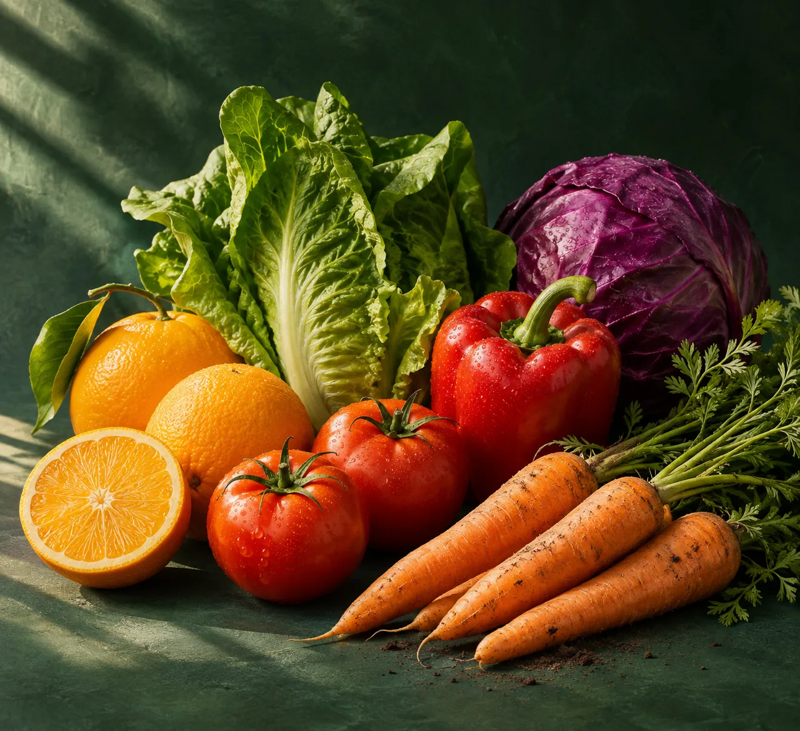
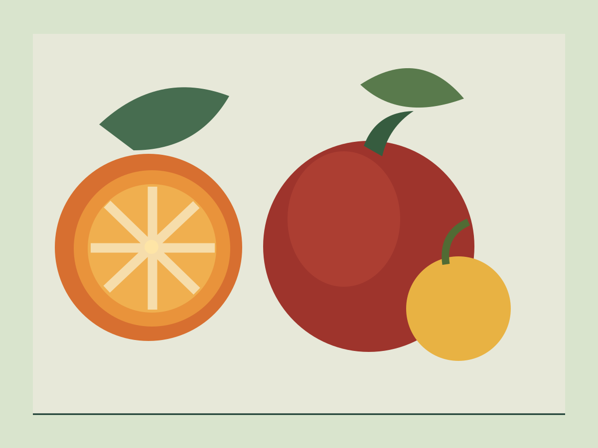

Frutas y verduras al por mayor para empresas en Lima.
¿Compras productos frescos para un restaurante, una cadena gastronómica o una operación de alimentación? Envía tu lista y las cantidades aproximadas para evaluar una cotización mayorista.

Organiza tu compra por categoría.
Organiza tu consulta por frutas, verduras o ambas. La disponibilidad de variedades, cantidades y presentaciones se confirma durante el proceso comercial.

Frutas al por mayor
Variedad, volumen y frecuencia estimada para tu negocio.

Verduras al por mayor
Especifica hortalizas, cantidades y presentaciones.
De tu lista a una cotización.
Empieza por describir los productos y cantidades que requiere tu operación.
Comparte tus productos.
Variedades, cantidades y frecuencia estimada.
Especifica tu operación.
Distrito y, si corresponde, número de locales.
Recibe una respuesta comercial.
Evaluamos la solicitud y las condiciones que puedan aplicarse.
Pensado para quienes compran en volumen.
Restaurantes y cadenas gastronómicas
Listas de insumos y requerimientos empresariales recurrentes.
Catering y alimentación corporativa
Consultas para servicios de alimentación con necesidades planificadas.
Hoteles y cocinas profesionales
Requerimientos de productos frescos para operaciones gastronómicas.
Una relación comercial real.
VEGANFRESH ya abastece frutas y verduras al por mayor a una cadena de restaurantes con presencia en distintas zonas de Lima.
Mención basada en información del propietario. No se divulga identidad ni volúmenes del cliente.
Antes de cotizar.
No. Nuestro enfoque es la compra mayorista para empresas y negocios.
Frutas y verduras: indica variedades para revisar disponibilidad.
Comparte volúmenes para evaluar las condiciones comerciales.
Indica distritos y locales para revisar tu solicitud.